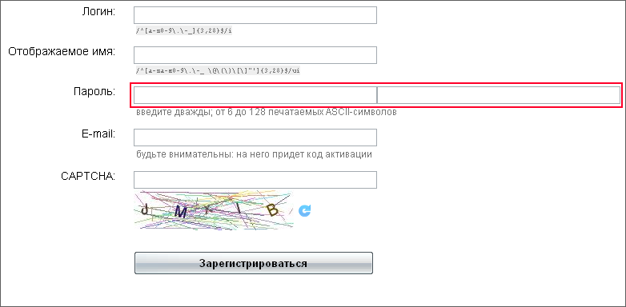
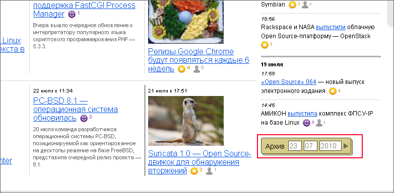
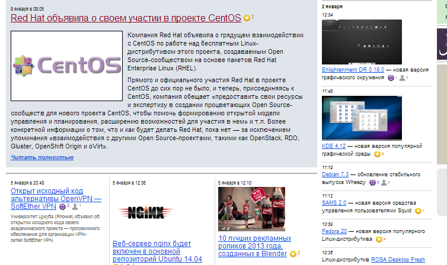

Анализируемый ресурс
Основная информация
Nixp.ru - интернет-портал, основная направленность которого новостной контент, статьи, готовы решения и различные ссылки на другие проекты в общей тематике OpenSource программного обеспечения. Портал имеет каждодневное наполнение материалами, в основном новостное. Среди разделов сайта есть "софт", "статьи", "рецепты", которые имеют большое по объему наполнение контентом; обновление данного контента происходит не регулярно.
Недостатки
На регистрацию уходит от 5 и более минут, это является очень большим временным интервалом. В основном ошибки во время заполнения так называемой "капчи". Но главным недостатком формы является выделенные на рисунке поля "пароля" и "подтверждения пароля". Оба поля стоят друг за другом, тогда как более привычным вариантом является расположение из друг под другом или разнесение по горизонтали на достаточное расстояние и обязательно добавление к ним подписей. Ни один из данных пунктов не выполняется, что создает большие сложности для пользователей. Поле подтверждение, из-за такого расположения, обладает свойством "слепоты" для пользователей, они просто не замечают его и повторяют ошибку несколько раз подряд.

Сайт содержит большое количество новостей, которые являются достаточно регулярно обновляемыми. Соответственно существует некоторая форма хранилища для устаревающих новостей - Архив. С помощью данного архива должна быть возможность просмотреть новости за определенные промежутки времени. Данная функция представляет из себя набор из трех полей, в которых указывается дата в формат дд/мм/гггг. У пользователей вызывает большое затруднение получение некоторой информации за определенный день. Самым неудобным является то, что элемент одновременно скрещивает в себе как выбор так и действие. Причем выбор осуществляется неудобным способом, с т.з. юзабилити и дизайна. Необходим потратить время и совершить ряд попыток, чтобы окончательно понять, как работает данный элемент интерфейса.

На главной странице расположено слишком большое количество информации, что приведет к некоторому смятению. При попытке что-то выделить для себя респонденты не могли однозначно ответить, чтобы могло привлечь их внимание, т.к. даже центральная статья была "слеповата" из-за большого числа блоков с информацией.
